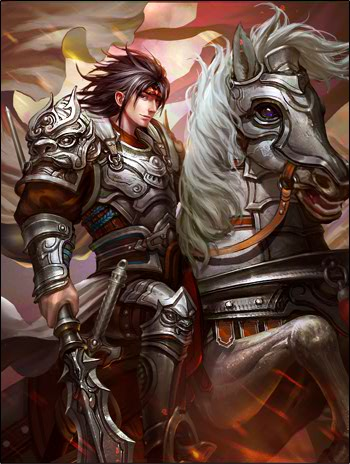

SP贾诩
- 缜略
- 锁定技，你使用的非延时类锦囊牌不能被【无懈可击】响应；你不能被选择为延时类锦囊的目标。
- 间书
- 限定技，出牌阶段，你可以将一张黑色手牌交给一名其他角色，并选择一名攻击范围内含有其的另一名其他角色
，然后令这两名角色拼点：赢的角色弃置两张牌，没赢的角色失去1点体力。
- 拥嫡
- 限定技，当你受到伤害后，你可令一名其他男性角色加1点体力上限，然后若该角色的武将牌上有主公技且其身份
甄姬
- 倾国
- 你可以将你的黑色手牌当【闪】使用（或打出）。
- 洛神
- 回合开始阶段，你可以进行判定：若为黑色，立即获得此生效后的判定牌并可以再次使用洛神――如此反复，直到出
现红色或你不愿意判定了为止。
貂蝉
- 离间
- 出牌阶段，你可以弃一张牌并选择两名男性角色。若如此作，视为其中一名男性角色对另一名男性角色使用一张【决斗】。
(此【决斗】不能被【无懈可击】响应)。每回合限用一次。
- 闭月
- 回合结束阶段，可摸一张牌。
界赵云

- 龙胆
- 你可以将【杀】当【闪】，【闪】当【杀】使用或打出。
- 涯角
- 每当你于回合外使用或打出一张手牌时，你可以亮出牌堆顶的一张牌，若此牌与你此次使用或打出的牌类别相同，你可以将之交
给任意一名角色;若不同则你可以将之置入弃牌堆。
更多武将介绍
返回主页